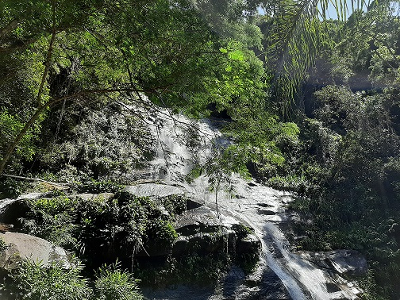

Clo au Brésil !
Bonjour, je m'appelle Claudia ! Depuis ma tendre jeunesse, j'ai une très grande passion pour le Brésil. Je pense que cela a commencé lorsque ma voisine Risolete a emmenagé à côté de chez nous avec ses deux fils : Luigi et Pablo. Ils ne parlaient pas un mot de français, et bien qu'ils fussent un peu plus jeunes que moi, on jouait souvent ensemble. Mais un jour, ils finirent par déménager et nous aussi. Dans notre nouveau logement, on avait accès à quatre chaînes brésiliennes ! Je n'y comprenais rien, mais c'était bien plus intéressant que les trois malheureuses chaînes qu'on avait en Guyane. On y passait des films d'action américains, des émissions de divertissement pour les petits et pour les grands. Tout cela a suscité en moi une grande appétence pour le portugais. Du coup, quand je suis entrée en 4e au collège, c'était une évidence pour moi de choisir le portugais comme LV2. Dès lors, j'ai formé dans mon esprit le projet de visiter ce pays qui me fascinait tant, sans savoir pourquoi !
Voici le parcours que j'ai effectué durant mon périple :
Chaque couleur correspond à un des Etats que j'ai visités !
| Mois / Jour | Lun | Mar | Mer | Jeu | Ven | Sam | Dim |
|---|---|---|---|---|---|---|---|
| Janvier | 13 | 14 | 15 | 16 | 17 | 18 | 19 |
| 20 | 21 | 22 | 23 | 24 | 25 | 26 | |
| 27 | 28 | 29 | 30 | 31 | 1 | 2 | |
| Février | 3 | 4 | 5 | 6 | 7 | 8 | 9 |
| 10 | 11 | 12 | 13 |
Rio de Janeiro, c'est une petite perle de la nature. Entre terre, mer, montagne et forêt, c'est un magnifique petit écrin de verdure ! En son sein, une ville où tout paraît irréel, tant la beauté de la ville est frappante ! Je l'avoue, j'ai eu un coup de foudre ! Ce que j'avais attendu depuis si longtemps était à la hauteur de mes espérances.
São Paulo, c'est la ville que j'ai le moins apprécié. En effet, le paysage du centre de São Paul est plutôt urbain ! Il y a beaucoup d'immeubles, de routes et beaucoup de bouchons... surtout des bouchons ! Tout s'explique quand on sait que c'est l'équivalent de La Défense à Paris ! Mais c'est aussi la première ville où j'ai rencontré un de mes correspondants : Alexandre. J'ai passé une journée avec lui et ses enfants. Ils m'ont fait visiter une petite partie de la ville car la ville de São Paulo est immense !
Je ne pourrais pas vous citer les plats typique du lieu, cependant la nourriture y est très goûteuse ! Au marché central, on trouve toutes sortes de bonnes choses à manger ! Minas Gerais, c'est le terroir brésilien ! C'est là-bas que l'on trouve du fromage : le queijo Minas, du bon café, un bonne variété de confiture de lait, et bien sûr, de quoi préparer le plat national : la feijoada !
A Minas Gerais, j'ai atterri dans la capitale : Belo Horizonte, mon deuxième coup de coeur ! En plus, j'ai été accueillie par la famille de Pedro comme un membre de la famille. Ce que j'ai pu retenir de cet endroit, c'est que les personnes sont très chaleureuses et très accueillantes ! Même s'ils ne vous connaissent pas, les gens vous abordent comme des amis. Même le chauffeur du uber m'a quasiment invité à déjeuner avec sa famille ! J'ai trouvé ça vraiment fou !
J'ai atterri à Salvador, la capitale. C'est l'Etat afro-brésilien surtout culturellement je pense. J'ai pu visiter le Pelourinho, qui est le centre historique, là ou il y a une architecture plutôt colorée.
{kind=link}